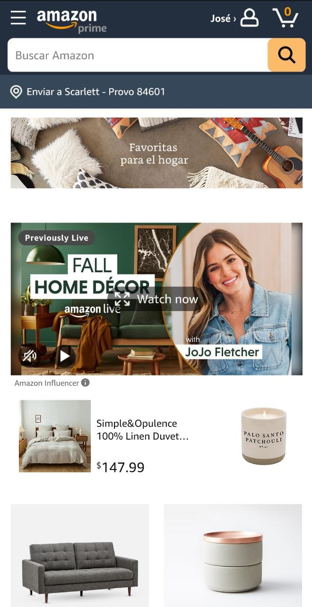

PARC: Contrast
Conduent
Visit Amazon's site

This is the website of the company that I work for. I like it since the colors make a good contrast
making the different elements look different from each other but at the same time the colors make the
site look clean.
White Space and Clean Design
Ishop
Visit Ishop's site
This is the website for Guatemalan reseller company that sells Apple products. This website looks clean
and improves drives focus because it has right amount of white space between its elements.
PARC: Alignment
Pandora
Visit
Pandora's site
I like the pandora website because everything is very well aligned. If you want to see the available
products you can see them in a list, everything looks very neat there is a certain amount of space
within each element. I have made some purchases through this website and since it is very aligned it has
been very easy, to search, compare between different products options and finally buy what I was looking
for.